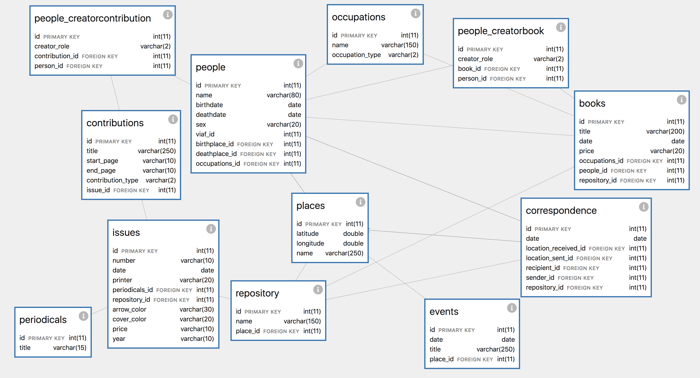

All of the data about Victoria Ocampo's networks that fuels my network graphs and visualizations is drawn from a select series of print materials: issues of her literary journal Sur, books published with her Editorial Sur, or correspondence that she wrote or received during the 1930s up through her death in 1979.
At the moment, this database lives in a virtual machine on my computer, but I hope to host it for public use in the near future. When I first embarked on my journey of gathering data and designing a place to store it, I was new to the world of database design. In light of the fact that my digital project centers around networks, or groups of connected and interrelated individuals, I initially drew my project as an Entity-Relationship Diagram (ERD), which defines relationships between entities (people, places, things) and their attributes (characteristic properties of an entity). With respect to my project, an example entity would be “person” and the attributes of this entity might be “name,” “birthplace,” and “occupation.”


These initial sketches led me to a more nuanced understanding of database design, and also how to format and structure all of my datasets. For starters, I began by conceptualizing the tables that contained my data around specific modules, or shared groupings of information. I then identified key pieces of information that I wanted to convey in the database, and key pieces of information that I hoped to make searchable for a larger public. This abstract visualization of my data as an ERD led to the development of a relational database using the open-source management system MySQL, where I created the following tables, or entities (represented here with Davila.js):

This tool also allows you to see the details of each layer in a drop-down feature:
For more information about the types of information and data stored within this database, see my forthcoming book chapter in the edited volume _Latin American Cyperspace_ (Ed. Cecily Raynor & Rhian Lewis)